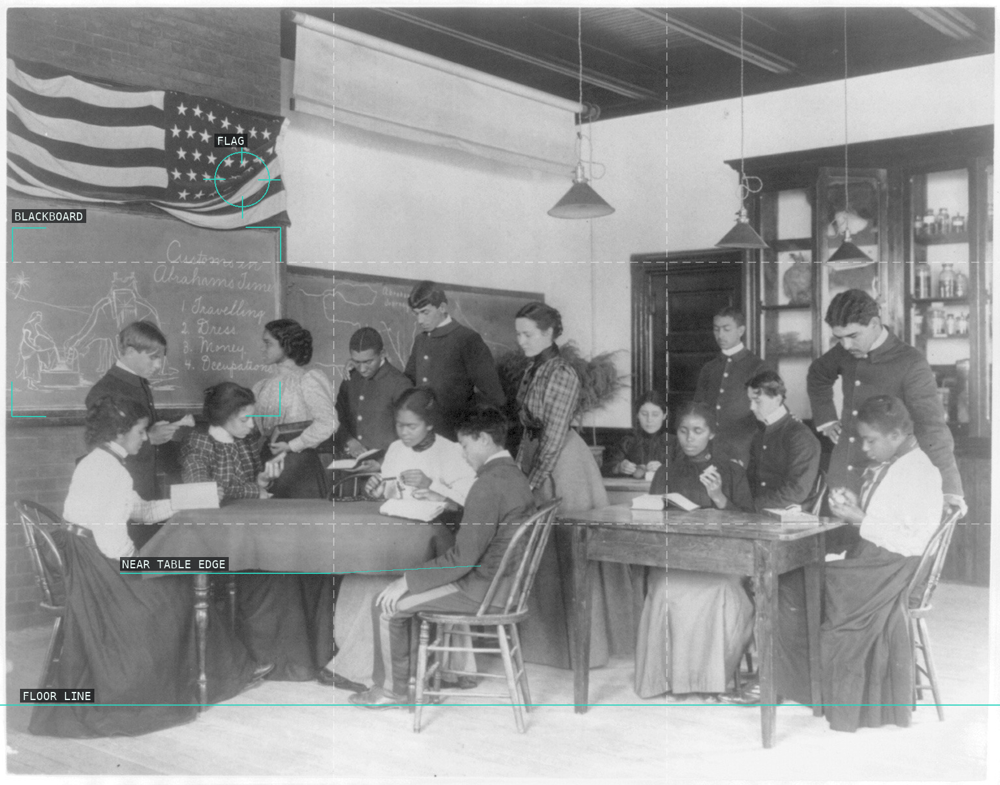
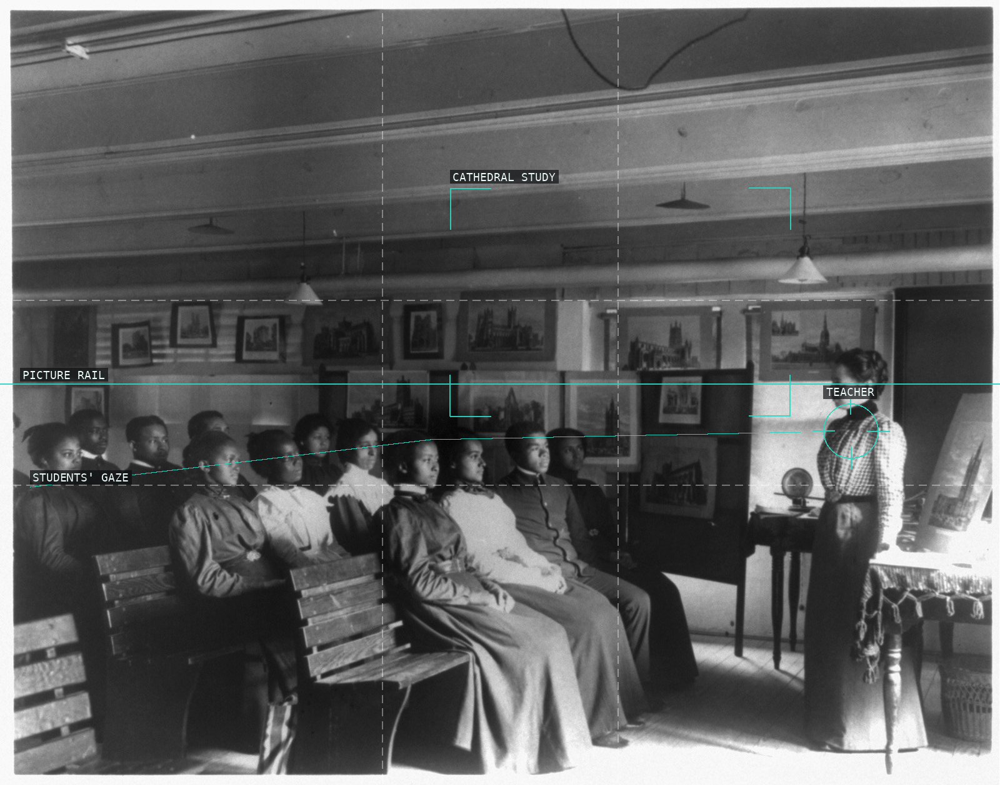
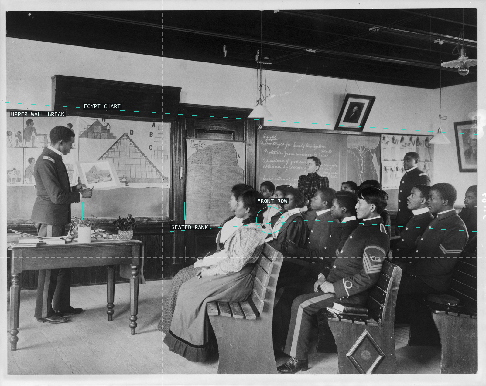
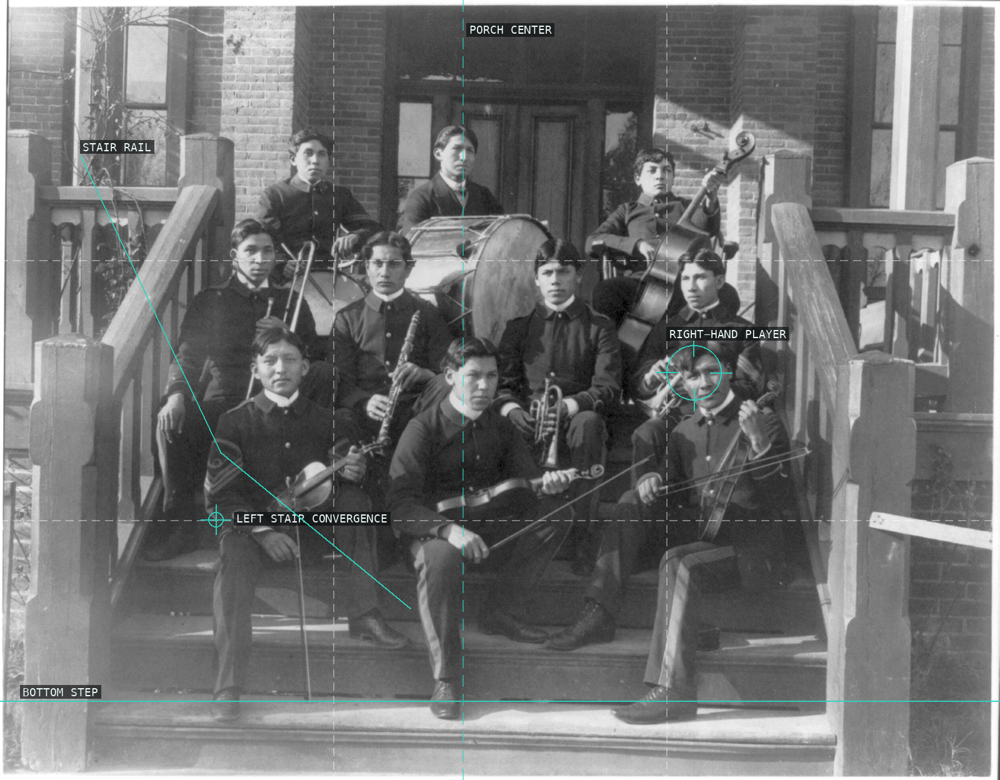
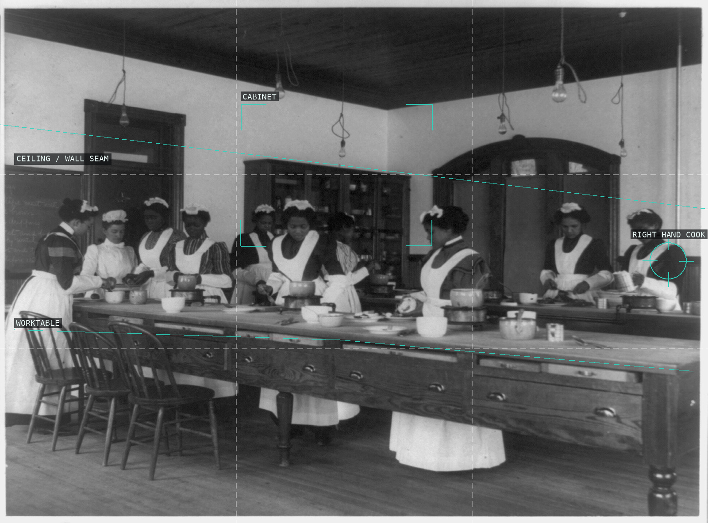
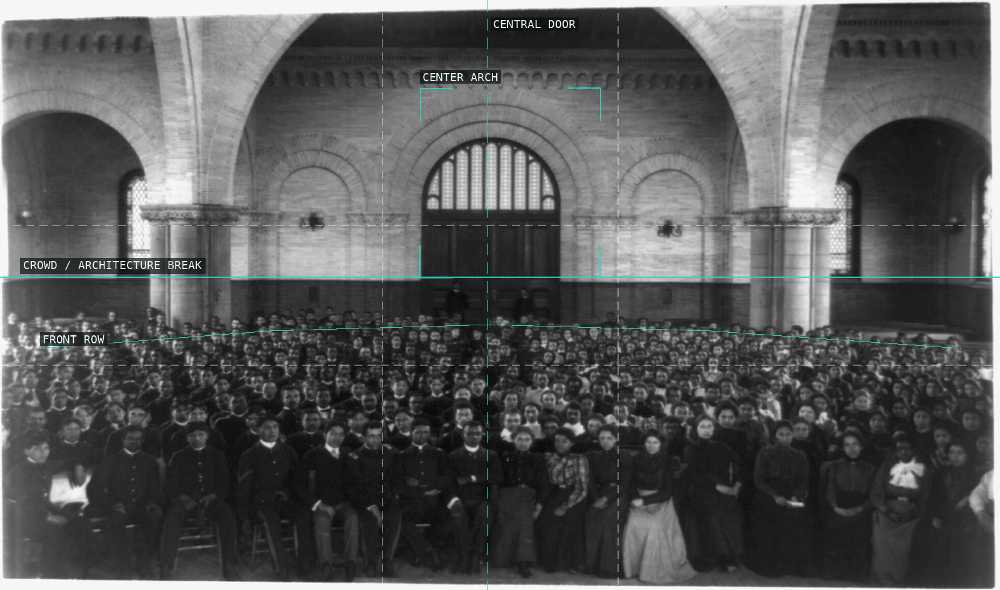
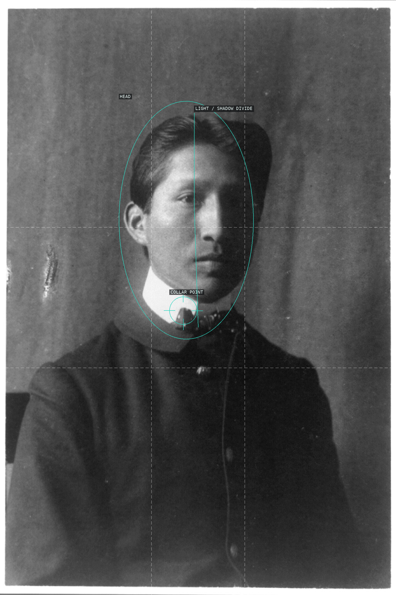
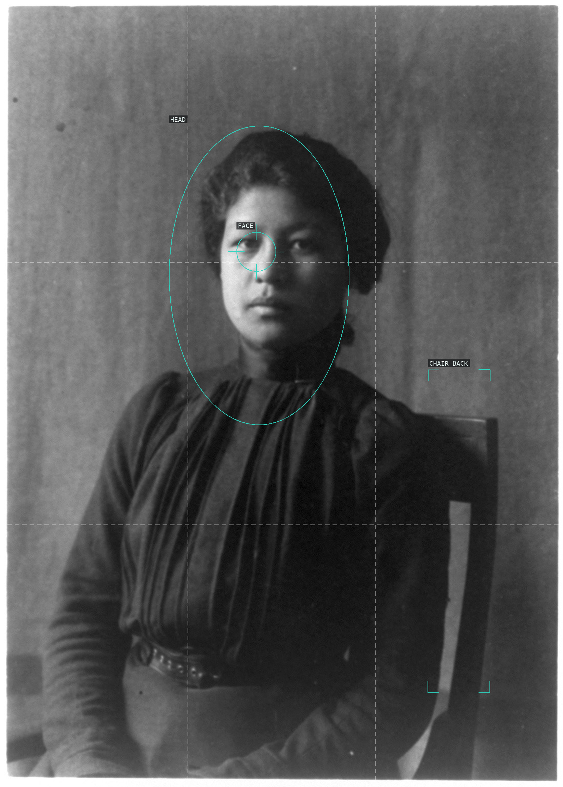

/* frances-benjamin-johnston - proofs */
8 plates. Deterministic overlays rendered by the composition-analysis skill.

01-classroom-bible-history
Tables, blackboard, and flag divide a packed classroom.

02-geography-cathedral-towns
Seated students face a teacher through a wall of pictures.

03-ancient-history-egypt
An Egypt chart and a seated rank form linked bands.

04-indian-orchestra
Stair rails frame a tiered porch ensemble.

05-cooking-class
A long worktable binds the room into one working plane.

06-school-assembly
The central arch gives order to a dense assembly.

07-student-portrait-right
Light and shadow divide a centered head.

08-indian-student-left
A face and chair back hold a quiet seated portrait.